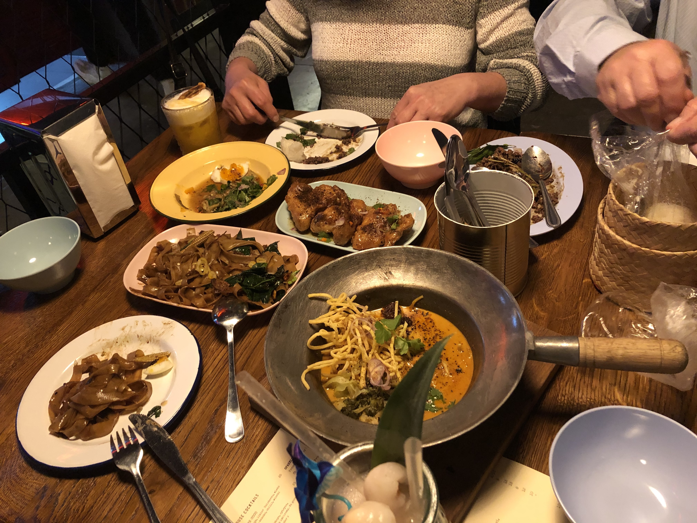
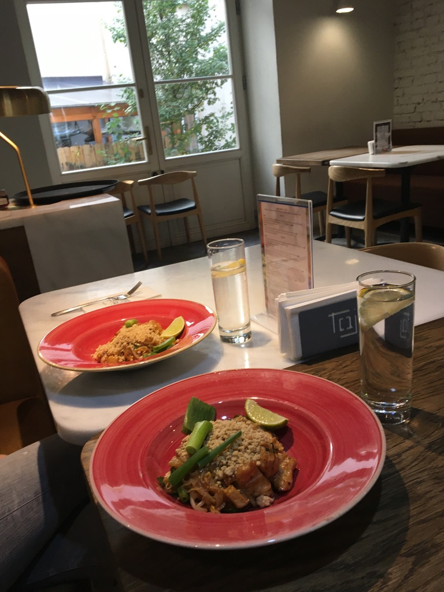
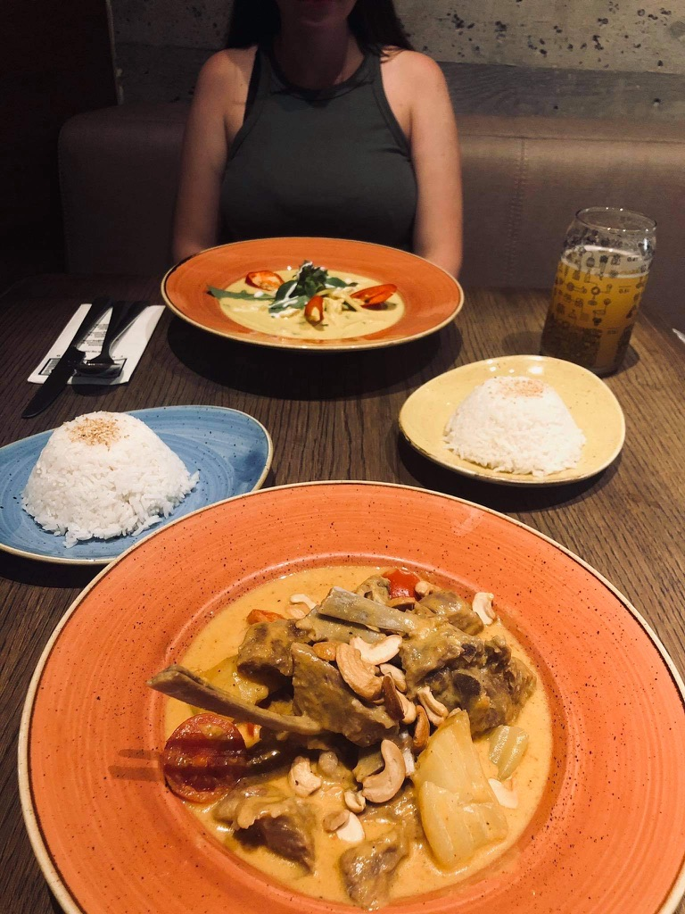
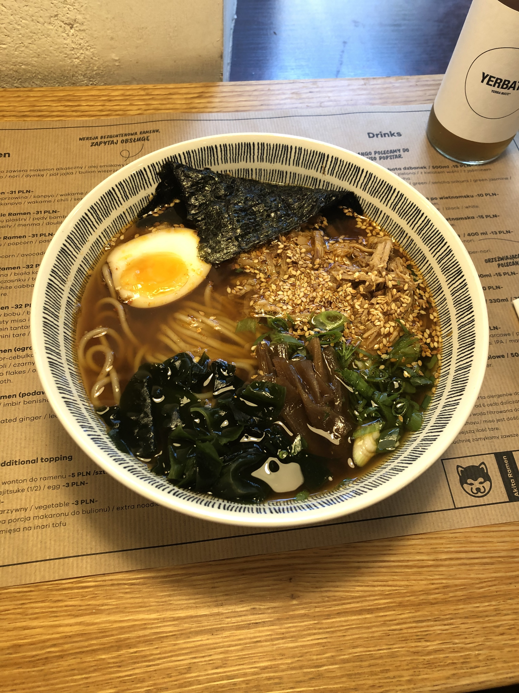
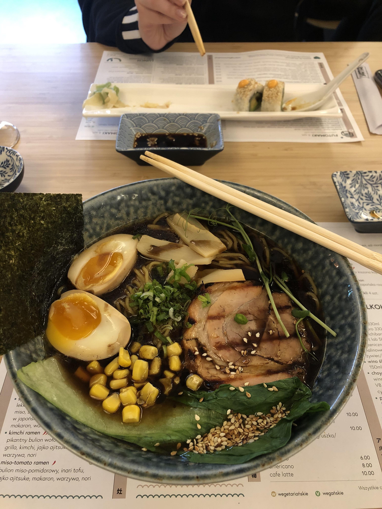
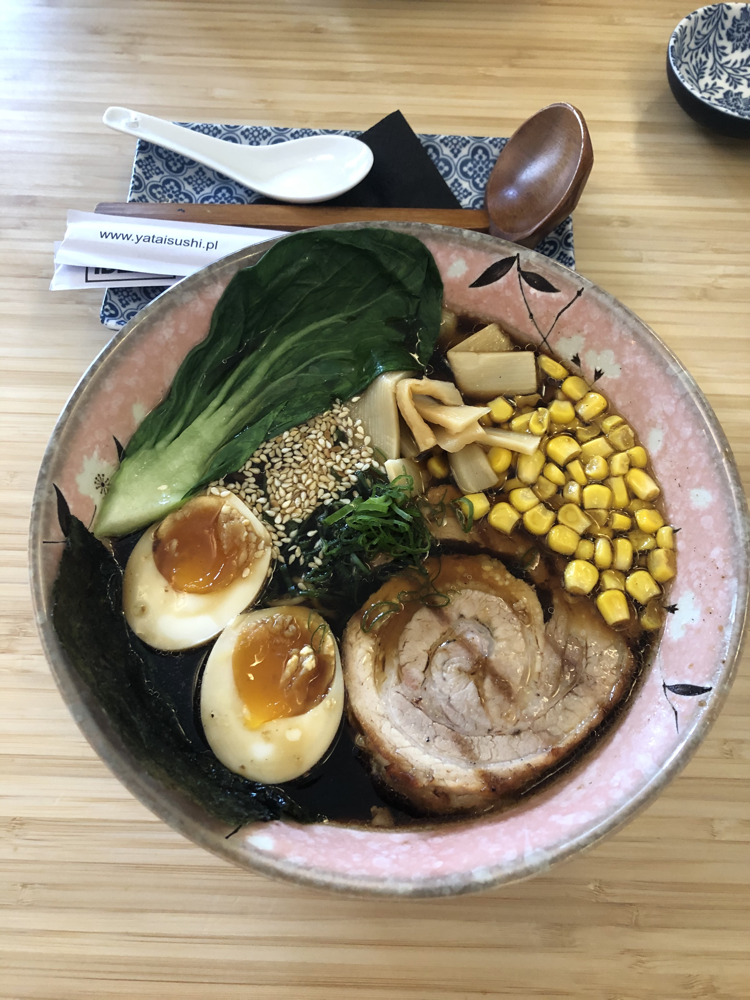
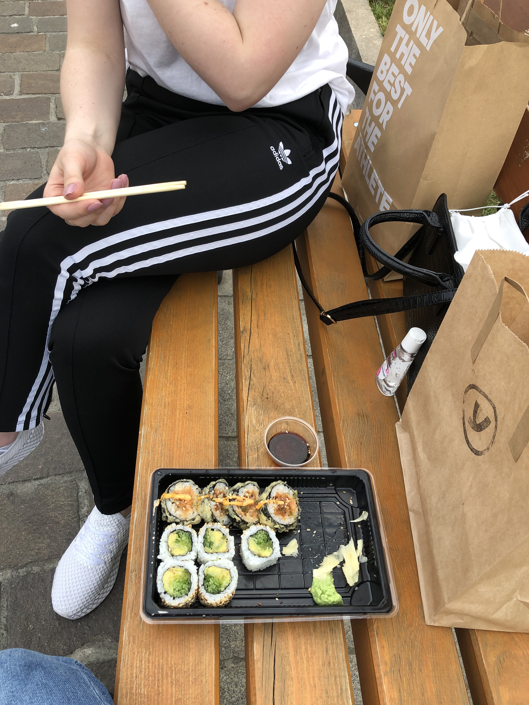

Smaczny Kraków
Molam
Restauracja azjatycka Molam znajduje się przy ulicy Rajskiej 3/4. Charakteryzuje ją system podawania posiłków, a mianowicie sharing food concept, polegający na zamawianiu kilku dań jednocześnie i dzieleniu się nimi, dzięki czemu każdy będzie mógł spróbować maksymalną ilość różnych smaków. Kuchnia charakteryzuje się intensywnymi smakami, bogatymi fakturami i aromatami. Wszystko przygotowywane jest od podstaw. Sama atmosfera w restauracji stworzona została na kształt Bangkoku, idąc chociażby do łazienki masz wrażenie jakbyś znalazł się nagle w azjatyckim mieście. Istotnym aspektem jest otwarta kuchnia pozwalająca śledzić na bieżąco proces przygotowania potraw. Wspaniała przygoda, którą warto przeżyć!
Taj
Kolejna restauracja, tym razem tajska, znajduje się na ulicy Miodowej 19. Od razu po wejściu do tego lokalu witają nas cudowne rysunki związane z kulturą tajską. Na miejscu można skosztować specjałów tamtejszej kuchni w bardzo miłej atmosferze. Jeśli nie jesteśmy pewni czy smaki tajskie przypadną nam do gustu to z pomocą przychodzi oferta lunchowa, dzięki której możemy spróbować poszczególnych posiłków i zdecydować czy zostaniemy na dłużej. Ja osobiście uwielbiam tajskie curry o wyrazistym, ostrym smaku. Bardzo chcialabym zwiedzić Azję i spróbować smaków tamtejszej kuchni, jednak póki nie mogę spełnić swojego marzenia udaje się do Taja i tam zawsze zjem coś pysznego - coś co myślami przeniesie mnie do innego regionu na świecie. Dodatkowym atutem tego miejsca jest wspaniałe wnętrze i starter serwowany na początek - prażynki krewetkowe z sosem sojowym.


Ramen People
Tę nazwę można spotkać w dwóch miejscach w Krakowie, a mianowicie na ulicy Nadwiślańskiej 5/L1 oraz Czystej 8. Są to miejsca serwujące ramen, czyli tradycyjną, japońską zupę pełną dodatków. Ramen przygotowywany jest od podstaw, wedle tradycyjnych receptur. Każda miska, którą mamy możliwość tam spróbować jest inna - różnorodna i pełna smaków oraz dodatków. Kucharze przykładają wagę do tego, aby serwowane przez nich specjały łudząco przypominały japońską kuchnię. Ramen składa się z wywaru, z tare czyli wypełnienia, z olejów smakowych i alkalicznego makaronu. Znajdą się tutaj także specjały wegańskie i ciekawe przekąski, jak na przykład fasolki edamame. Wszystko przemyślane jest od początku do końca, ponieważ twórcy chcą propagować japońską kulturę w Polsce. Jeśli lubisz wyzwania to zdecydowanie miejsce dla Ciebie!

Akita Ramen
To przykład kolejnej restauracji serwującej ramen, która znajduje się na ulicy Węgłowej 4/LU 10. Pomysł na biznes pojawił się w głowach twórców podczas pobytu w Japonii, gdzie poznali tamtejsze smaki i ogromnie się nimi zachwycili. Wracając do kraju po 5 latach pobytu w Japonii, właściciel postanowił zabrać ze sobą cząstkę tego kraju i stworzyć własny lokal na jej wzór serwujący ramen, czyli prawdziwie japońskie danie. Okazało się to ogromnym sukcesem i do dziś ciężko znaleźć tam miejsce, aby móc spróbować tych doskonałych smaków. Niekończące się kolejki i wytrwali ludzi, którzy w nich stoją świadczą o znakomitości tego miejsca.
Yatai Sushi Otsumami Bar
Moja miłość do sushi rozpoczęła się wraz z podjęciem pracy w jednej z azjatyckich restauracji w Krakowie. Gdy spróbowałam smaku sushi chciałam więcej! Dlatego znalazłam restaurację Yatai, która mieści się na Rynku Podgórskim 14. Restauracja ma mały lokal, w którym jest zaledwie kilka stolików, dlatego warto wcześniej dokonać rezerwacji, aby znaleźć miejsce dla siebie. Yatai serwuje sushi, dania z grilla Kamado i japońskie przekąski oraz napoje. Mogę przyznać, że jest to jedna z moich ulubionych restauracji sushi, nigdy nie zawiodłam się na smaku, a byłam tam wiele razy. Polecam to miejsce wszystkim znajomym i do dziś każdy z nich tam powraca i jest mi wdzięczny za polecenie. Magiczne miejsce z doskonałym sushi, które koniecznie powinieneś odwiedzić.



